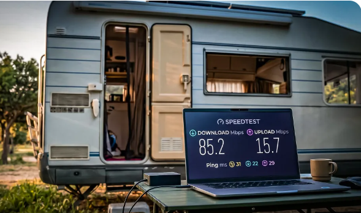

🚀 Premiers pas
Kit, application, choix d’emplacement, alimentation et premiers tests de débit.
Voir le guide de démarrageKit, application, choix d’emplacement, alimentation et premiers tests de débit.
Voir le guide de démarrageZones rurales, hiver, neige sur l’antenne, forfaits résidentiels et mobilité.
Spécificités CanadaDisponibilité par pays, réglementation, langues de l’app et bonnes pratiques.
Spécificités EuropeFAQ, formulaire de contact et pistes pour discuter avec d’autres utilisateurs.
CommunautéSelon le programme Starlink, l’abonné et le parrain peuvent recevoir un mois de service gratuit après activation — en passant par le lien de parrainage de ce guide.
Utiliser le lien du guide →Activation, scan du ciel et réglages : tout se fait avec l’application Starlink sur téléphone (iOS / Android) ou sur ordinateur.
Voir l’installation dans l’app →Starlink (SpaceX) propose une connexion internet par satellite, utile lorsque le câble ou la fibre n’arrivent pas chez vous, ou pour une utilisation mobile (camping-car, chalet, travail sur le terrain). Ce site regroupe des explications en français, des visuels et des vidéos pour vous aider à avancer sans jargon inutile.
Nous ne sommes pas Starlink ni SpaceX : il s’agit d’un guide éducatif indépendant. L’abonnement se fait sur le site officiel Starlink ; nous indiquons un lien de parrainage en fin de parcours pour celles et ceux qui ont consulté le guide (voir ci-dessous).
Île, lac, forêt ou campagne : tant qu’il y a une vue dégagée vers le ciel, Starlink peut relier un foyer ou un campement au reste du monde — télétravail, école à la maison, téléphone d’urgence.

Les performances varient selon l’heure, la météo et le nombre d’utilisateurs sur le secteur. Un test dans l’application ou sur speedtest.net donne une idée ; l’important est la stabilité pour vos usages (visio, streaming, téléchargements).

Ces vidéos sont hébergées sur YouTube ; elles complètent le texte du guide. Les chaînes et titres peuvent évoluer.
▶ Tutoriel Starlink Mini en français (YouTube)